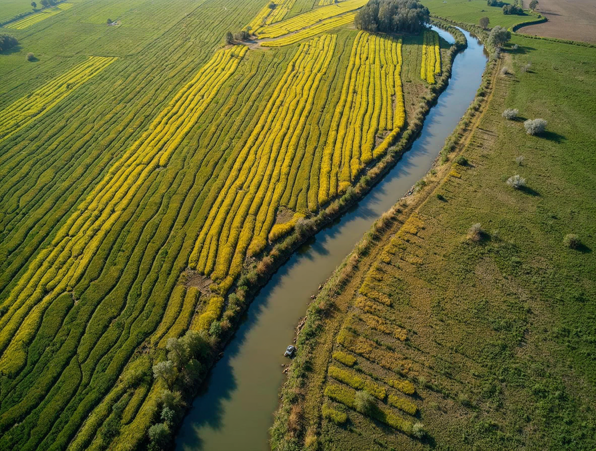
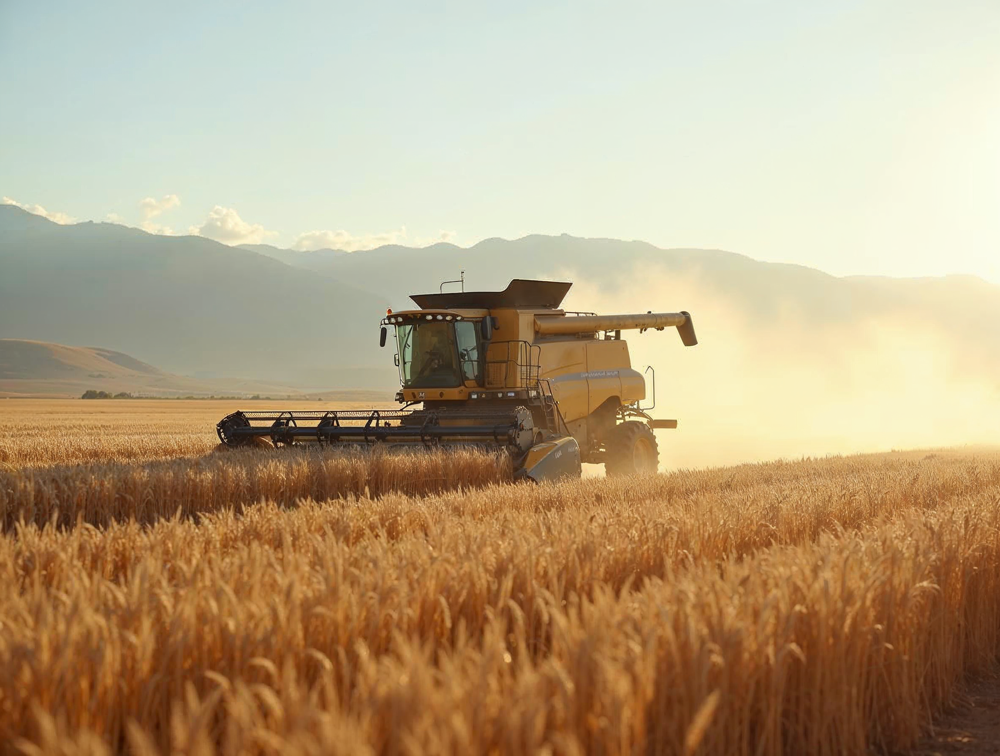
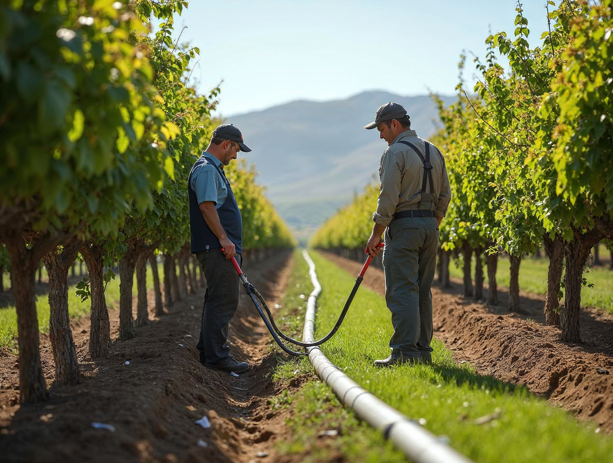
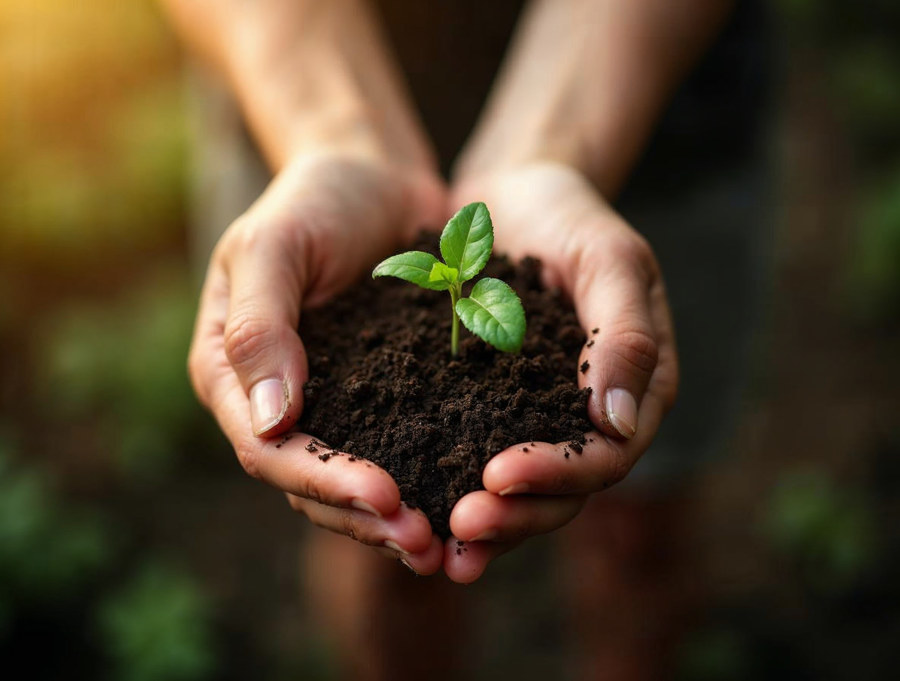
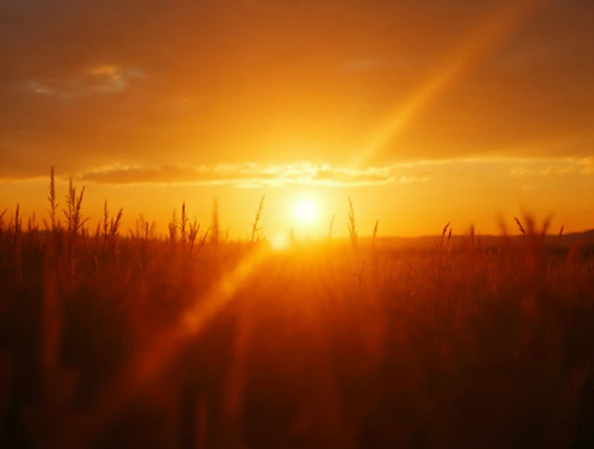
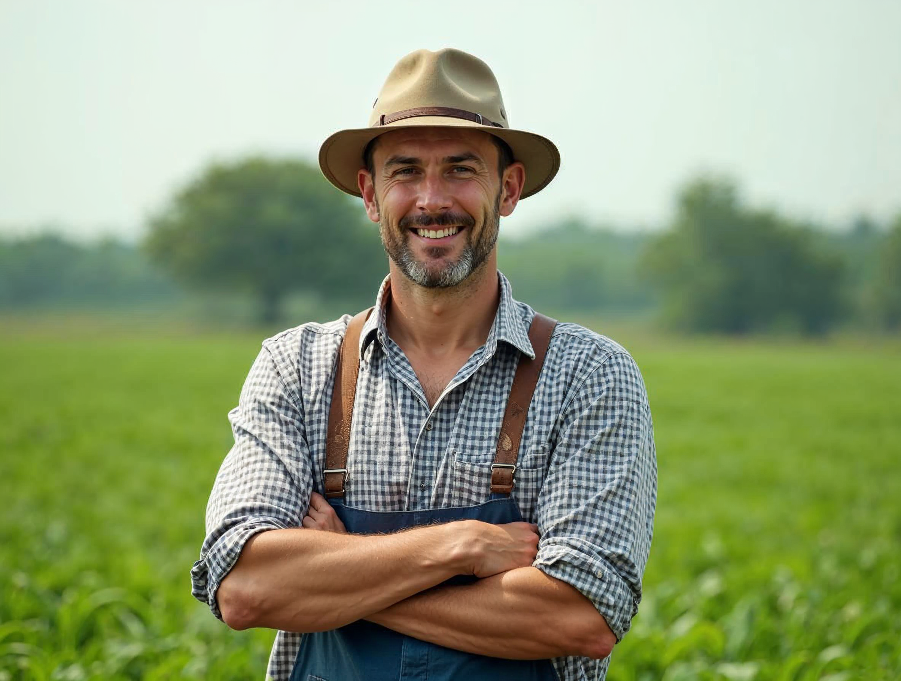

Fotografía: qué imagen pertenece a Landera
El criterio
Landera muestra campo productivo real: luz natural, escala verdadera y colores como son. La foto documenta; no emociona por encargo.
Sí
Luz natural · escala real · campo en producción · maquinaria de verdad · personas trabajando, nunca mirando a cámara · aéreas geométricas · detalle agrícola · colores naturales.
No
Banco de imágenes evidente · manos con tierra · atardecer emocional · retrato posado · filtro verde · saturación excesiva · cielos reemplazados.
De dónde salen
Del archivo de Landera y de sus predios. Una sesión mínima cubre el manual: 10 de campo, 3 de equipo, 3 de maquinaria y 3 aéreas.
Lo que sí
Campo productivo — cultivo en hilera, cielo real

Aérea geométrica — el surco como patrón

Maquinaria en uso — polvo, luz de trabajo

Personas trabajando — de espaldas, a escala
Lo que no

Manos con tierra — el cliché agrícola

Atardecer emocional — filtro naranja, destello

Retrato posado — mirando a cámara, camisa limpia
Filtro verde — la misma foto, saturada: ya no es Landera
⚠ Imágenes de referencia generadas para ilustrar el criterio — el archivo real las reemplaza en la próxima versión
Invariables
Variables
18 · Sistema
Landera · Manual de marca